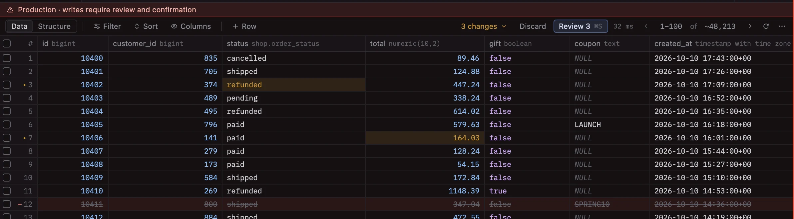
Staged edits
Edit cells, insert and delete rows right in the grid. Nothing is written until you review it, and discarding is one click.
dbunk is a fast, open-source database client for macOS, written in Rust on GPUI, the framework behind the Zed editor.
Rust from the driver to the pixels. The UI is drawn on the GPU, so large results scroll without a stutter.
Edits are staged, reviewed as a diff with the exact SQL, and production writes need a typed confirmation.
PostgreSQL, MySQL, SQLite, ClickHouse and Redis, each with its own object tree and tools.
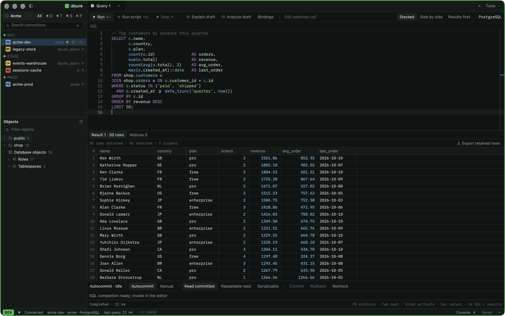
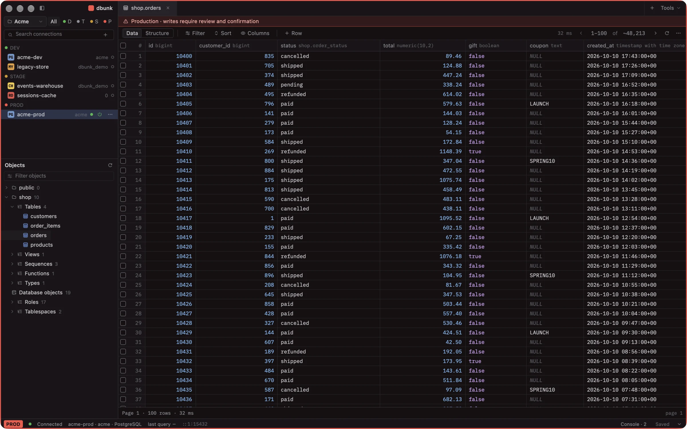
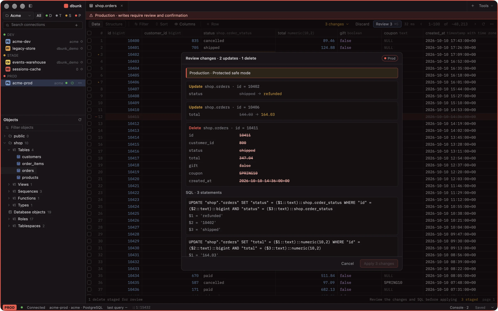
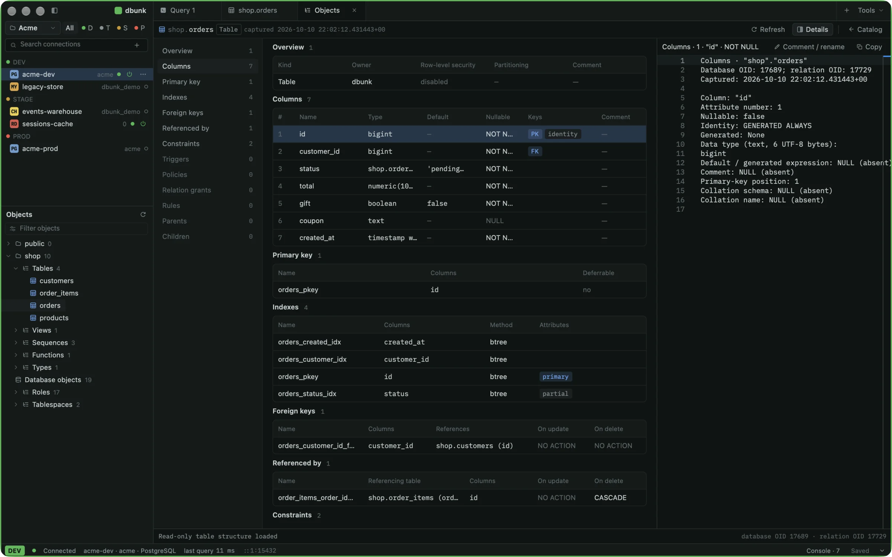
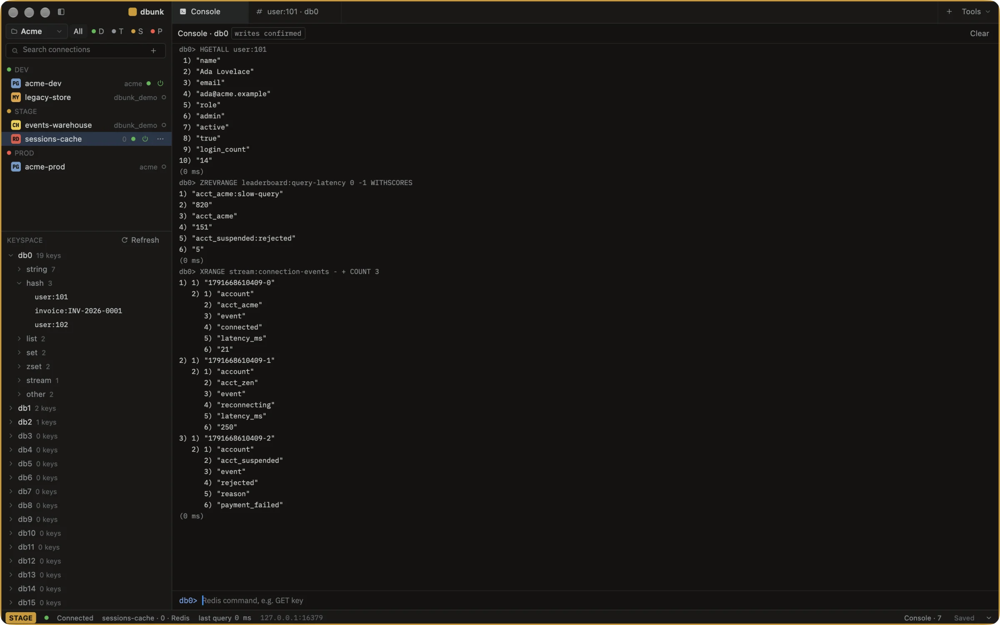
Not a query box with a grid attached. The tools you would normally open a second app for are tabs here.

Edit cells, insert and delete rows right in the grid. Nothing is written until you review it, and discarding is one click.
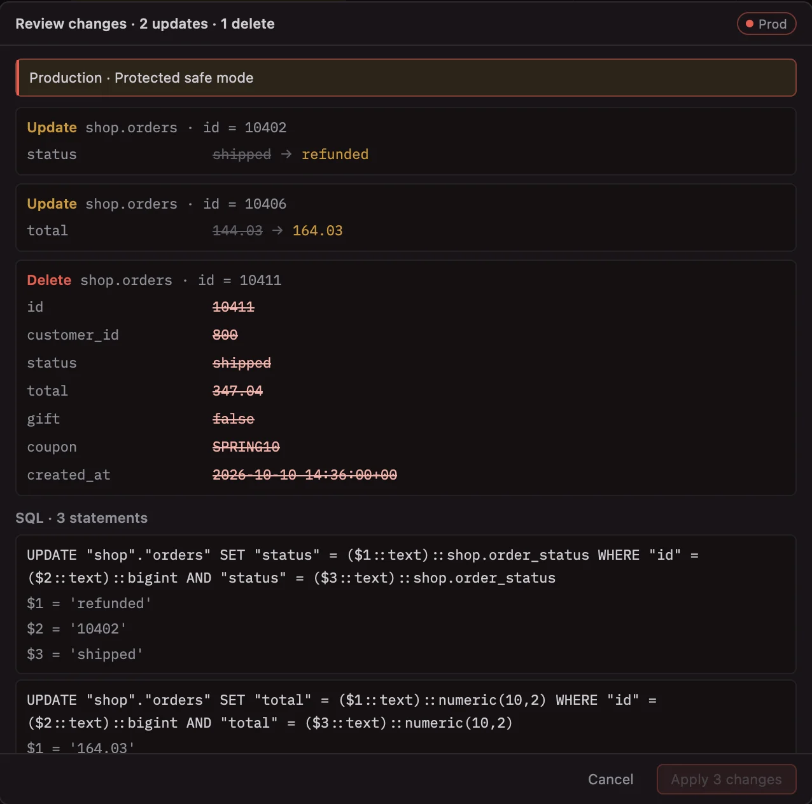
Every change as old and new values, next to the exact parameterised SQL, then applied together.
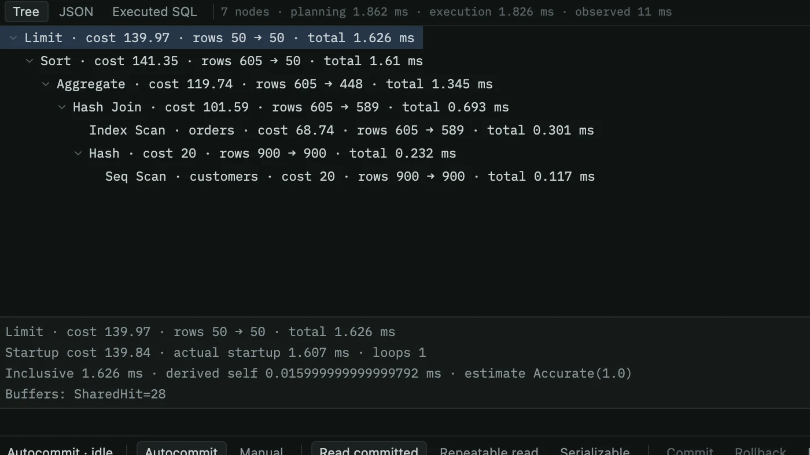
EXPLAIN and EXPLAIN ANALYZE as a tree with costs, row estimates and timings.
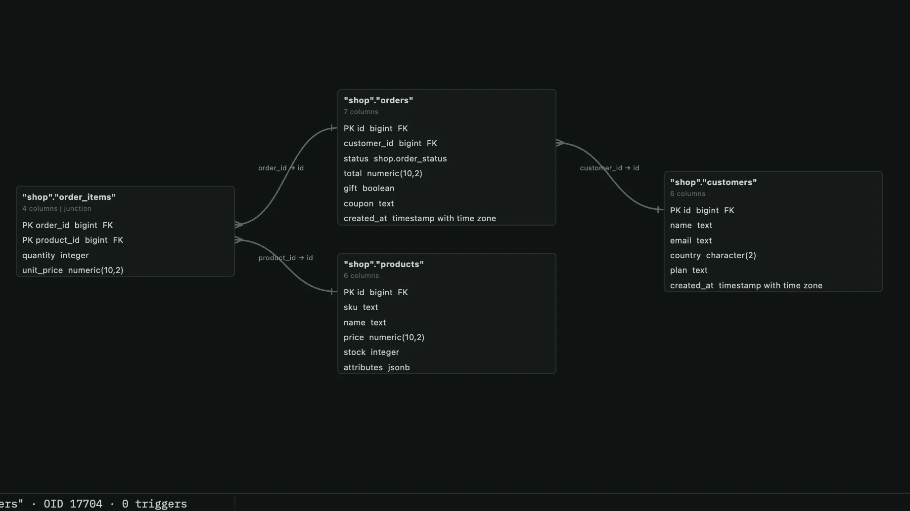
Tables and foreign keys laid out as a diagram. Export it as SVG or PNG.
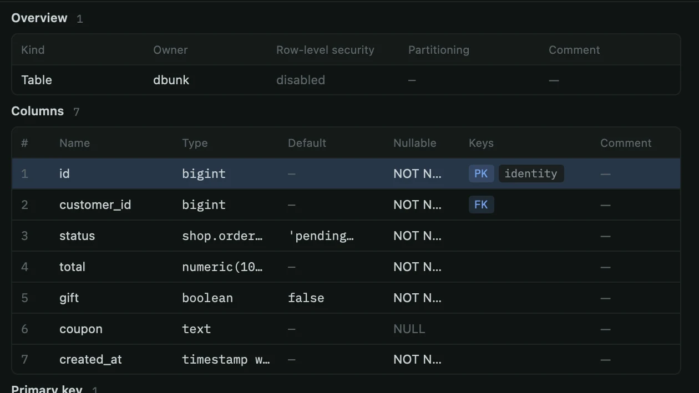
Columns, keys, indexes, constraints, triggers, policies and grants for any table.
⌘K jumps to any connection, schema, table, function or command.
Streamed transfers with column mapping, progress and cancel.
pg_dump and pg_restore as cancellable jobs, with a review before restore.
See what is running and what is blocking it. Cancel or terminate.
Compare two databases object by object and field by field.
Spin up a scratch PostgreSQL in Docker, start it, stop it, remove it.
Every connection has an environment. You always know where you are, and the backend enforces what a write needs.
The window frame takes the colour of the connection: green for development, amber for staging, red for production, with a standing warning strip.
On production, applying staged changes means reading the review and typing confirm. Elsewhere, a review and a click.
Mark a connection read-only and writes are refused. Safe mode is checked where statements run, not just in the interface.
Passwords are encrypted on disk with an app password, kept in the macOS Keychain, or stored plain for throwaway setups. No account, no cloud.
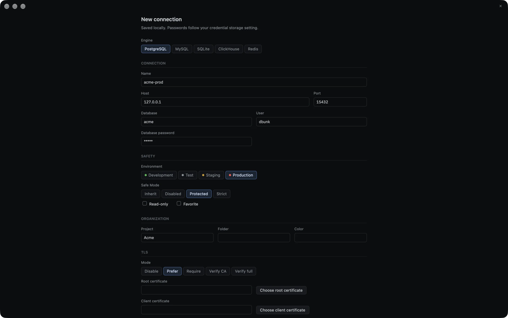
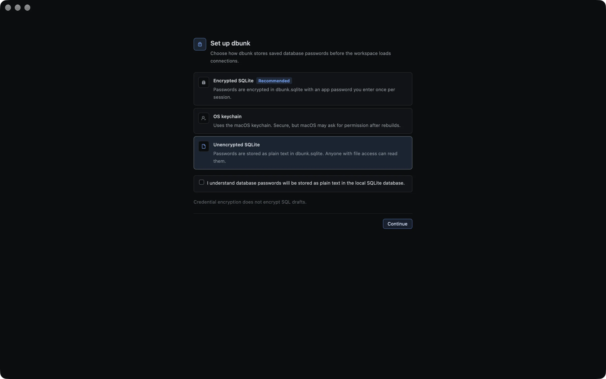
Each engine gets its own session, object tree and documents, so Redis looks like Redis and ClickHouse looks like ClickHouse.
Everything on this page.
Databases, tables, views, routines, events and triggers.
Open a file and its attached databases.
Tables, views, materialized views and dictionaries.
A console with a sampled keyspace, grouped by type.
Every control is reachable from the keyboard, and the common moves are one shortcut away.
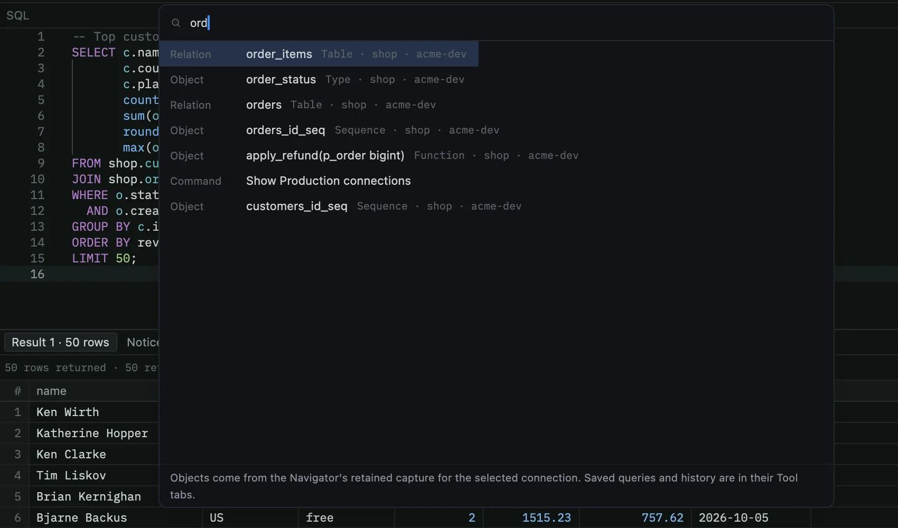
dbunk is built in the open. Read the code, the plans and every architecture decision on GitHub.
dbunk is pre-alpha: fast and already useful, and still changing between releases. Point it at databases you can afford to lose.
xattr -dr com.apple.quarantine /Applications/dbunk.app